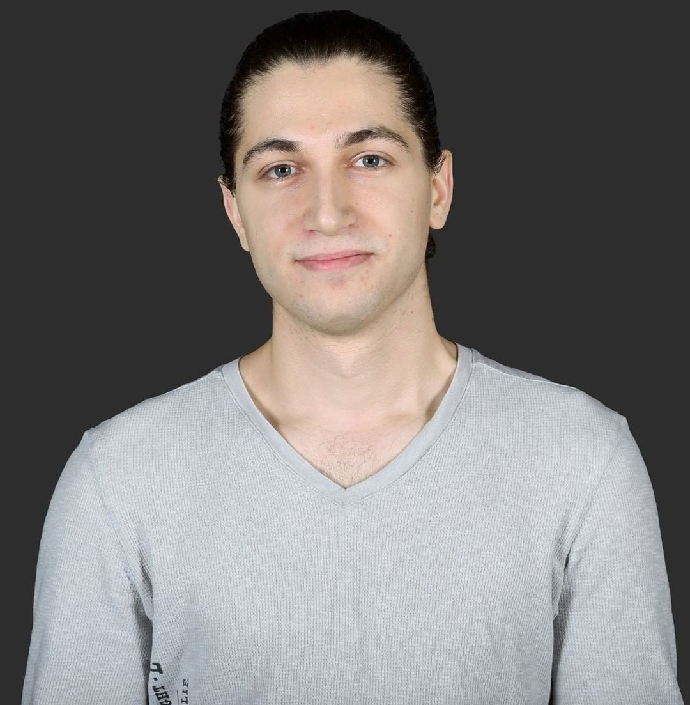

I am a university student at Middle East Technical University (ODTÜ) with a strong passion for web development and academic research.
Through my academic education, I gained a solid foundation in web programming, mastering HTML, CSS, and Java. I also expanded my technical skillset by learning Python as part of my curriculum.
Beyond university coursework, I attended a specialized bootcamp to gain insight into mobile application development with Flutter. Additionally, I acquired 3D design skills by learning Blender and 3ds Max at school, allowing me to combine technical logic with creative visuals.


Beyond coding, I am interested in the intersection of AI and education, conducting research on how technology can enhance learning experiences.